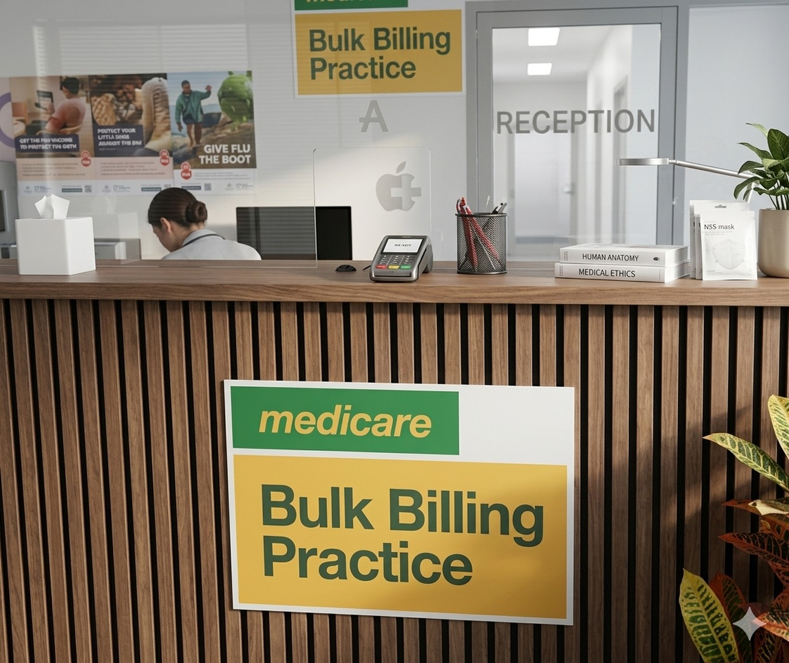

General practice · Mount Nelson TASHealthcare,
Healthcare,
made beautifully simple.
Compassionate GP care — now connected with Nelson Care Sync and live HotDoc availability.
Book with HealthEngineBook with HotDocOpen Care Sync
Next GP appointments.
These times are refreshed from HotDoc when GitHub Actions is enabled. Patients should always click through to HotDoc to confirm.
Brand
A clear identity for the clinic.
The refreshed website uses the official logo, reception photo, Care Sync and online booking pathways.
Reception
A clear, welcoming first step.
The reception photo highlights bulk billing information, Medicare signage and a clean arrival experience.
